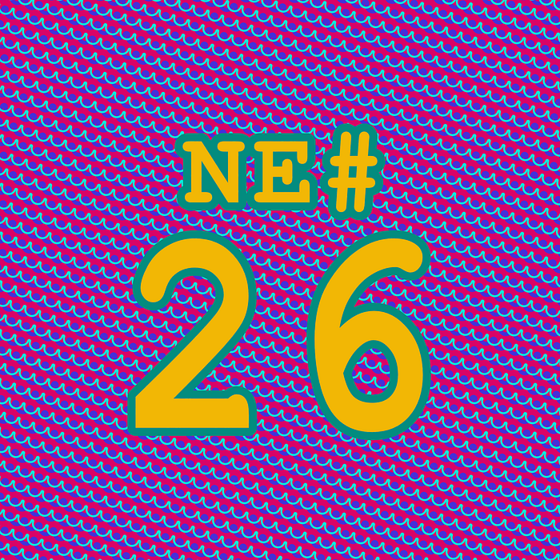

Die Nerd Enzyklopädie 26 - FOCAL
FOCAL

FOCAL (für Formulating On-line Calculations in Algebraic Language) ist eine Programmiersprache, die 1968 erstmals vorgestellt wurde. Entwickelt wurde sie von Richard Merrill von DEC, Digital Equipment Corporation.
FOCAL war für den Einsatz auf den PDP Computern gedacht (Programed Data Processors). 1969 veröffentliche Jim Storer, damals Schüler an der Lexington High School, für den PDP-8 das in FOCAL geschrieben Spiel Lunar Lander. Der Programmcode bestand aus nur 40 Zeilen! FOCAL ist vergleichbar mit BASIC; aber bei weitem nicht so populär. Ein Grund war sicherlich die strenge Lizenzierungs-Politik von DEC. Aber auch Microsoft könnte, wenn man diese Spekulation zulässt, seinen Teil zum Misserfolg von FOCAL beigetragen haben.
Microsoft vertrieb damals einen FOCAL-Interpreter. 1980 wurde der Verkauf aber eingestellt. Der Grund ist banal: Nachdem eine Bestellung für diese Software einging, konnte man das Master-Tape nicht mehr finden, um eine Kopie anzufertigen. Die Bestellung wurde kurzerhand mit dem Hinweis storniert, dass das Produkt nicht mehr verkauft wird. Dass es vermutlich einfach nur „verloren“ ging, behielt man für sich [MICR3].
In der damaligen Sowjetunion erlebte FOCAL Mitte der 1980er Jahre einen zweiten Frühling. Der russische Heimcomputer Electronica BK, eine Kopie des PDP-11, wurde zusammen mit FOCAL ausgeliefert. Aber auch dort wurde FOCAL später durch BASIC verdrängt…